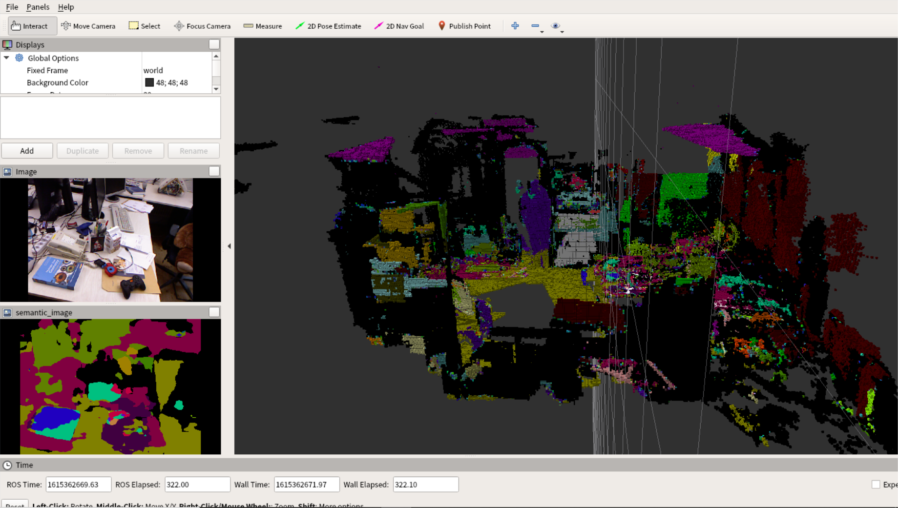

pspnet+ORB_SLAM2+octomap
1 | cd semantic_slam_floatlazer |
catkin_make的时候可能会遇到一些问题，比如
CMake Error at /opt/ros/indigo/share/catkin/cmake/catkinConfig.cmake:83 (find_package):
Could not find a package configuration file provided by “octomap_msgs” with
any of the following names:
octomap_msgsConfig.cmake
octomap_msgs-config.cmake
Add the installation prefix of “octomap_msgs” to CMAKE_PREFIX_PATH or set
“octomap_msgs_DIR” to a directory containing one of the above files. If
“octomap_msgs” provides a separate development package or SDK, be sure it
has been installed.
1 | sudo apt install ros-indigo-octomap* |
再catkin_make一下
setuptools>=41.0.0
numpy>=1.15
scipy
Pillow
cython
opencv-python==3.3.1.11
matplotlib
scikit-image
tensorflow-gpu==1.13.1
keras==2.0.8
h5py
imageio==2.6.1
imgaug
pandas
future
torch
torchvision
protobuf
IPython[all]
把依赖包写入requirements.txt放在/home/youyx/catkin_ws/src/semantic_slam_floatlazer/下
sudo pip install -r /…/requirements.txt
模型和数据集准备
模型是pspnet_50_ade20k.pth，在google drive上下载
https://drive.google.com/file/d/1u_BEWdVIYiDnpVmAxwME1z3rnWWkjxm5/view?usp=sharing
1 | cd /semantic_slam_floatlazer/semantic_slam/params |
将model_path修改为模型保存的路径
model_path: “/home/youyx/data/semantic_slam/pspnet_50_ade20k.pth”
下载tum数据集rgbd_dataset_freiburg1_room.bag
https://vision.in.tum.de/rgbd/dataset/freiburg1/rgbd_dataset_freiburg1_room.bag
运行
终端1：
1 | roslaunch floatlazer_semantic_slam semantic_mapping_tum.launch |
终端2：
1 | cd /home/youyx/data/semantic_slam/TUM/freiburg1 |
效果
